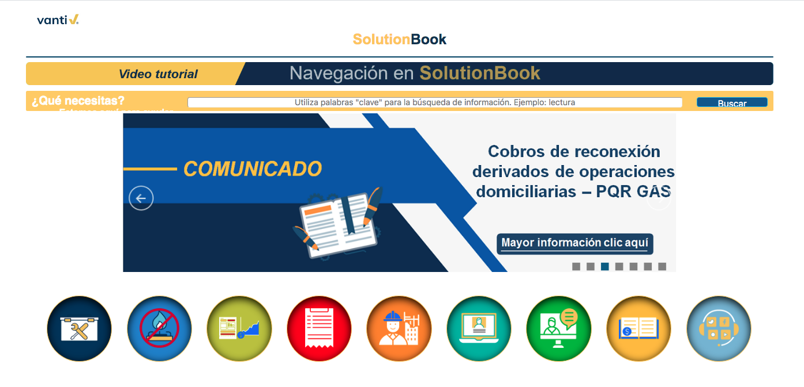

Definición
Es una herramienta de consulta óptima y de apoyo permanente en las actividades propias de la operación en Call Center, Atención Presencial y Análisis PQRS.
En ella, se encuentran los procedimientos y protocolos de atención para tramitar una PQRS desde los canales de atención y todas las actividades de postventa tales como toma de lectura, reparto, aplicación de pago, cobranza, entre otras.


En SolutionBook podrás encontrar los siguientes tipos de documentos, los cuales te ayudarán a gestionar de forma correcta cada una de las PQRS de nuestros clientes.